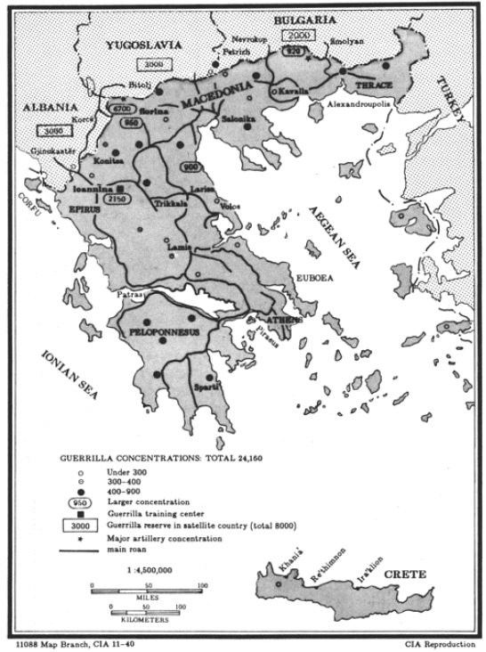

Греческие политэмигранты в Ташкенте: после гражданской войны в Греции (1949)
В 1949 году, после поражения в гражданской войне в Греции, Советский Союз принял тысячи греческих политэмигрантов — самая большая группа была расселена в Ташкенте. Формирование, жизнь и репатриация этой общины в 1980-е годы на основе проверенных фактов.

В 1949 году, после поражения коммунистической стороны в гражданской войне в Греции, тысячи греческих политэмигрантов были рассеяны по странам Восточного блока. В Советском Союзе бо́льшая их часть была расселена в Ташкенте, в Узбекской ССР. Эта статья рассказывает на основе проверенных фактов, как сформировалась эта община, как она жила и как в итоге вернулась на родину (Источник: Wikipedia — «Greeks in Uzbekistan»; «Refugees of the Greek Civil War»).
Гражданская война в Греции и поражение
Гражданская война в Греции (1946–1949) велась между правительственными силами Греции и Демократической армией Греции (ДАГ) во главе с Коммунистической партией Греции (КПГ). ДАГ была создана 28 октября 1946 года. Решающее поражение произошло в августе 1949 года в сражении при Граммосе. К тому времени более 100 000 человек — бойцов и гражданских — покинули страну, уйдя в Югославию и страны Восточного блока; часть детей была размещена в Румынии, Чехословакии, Польше, Венгрии и Болгарии (Источник: Wikipedia — «Refugees of the Greek Civil War»; «Democratic Army of Greece»).
Почему именно Ташкент
Согласно историческим данным, около 11 900 греческих бойцов были эвакуированы в Советский Союз (примерно 8 573 мужчины и 3 407 женщин) и направлены в основном в Ташкент и Алма-Ату. Бо́льшая часть — около 11 000 человек — была расселена в Ташкенте, что сделало город крупнейшим центром греческих политэмигрантов в Советском Союзе. Руководство КПГ, включая генерального секретаря партии Никоса Захариадиса, отступило в Ташкент в 1949 году. Основное прибытие пришлось на осень 1949 года, а община укрепилась в начале 1950-х (Источник: Wikipedia — «Greeks in Uzbekistan»; «Nikos Zachariadis»; cosmosphilly.com — «Greeks of Tashkent»).

Жизнь в Ташкенте
Эмигранты жили сплочёнными общинами. Греческих детей учили в школе греческому языку, истории и литературе; основанный в 1964 году Союз политэмигрантов имел собственное здание с офисами и школой. Взрослые работали на текстильных фабриках, стройках и в сельском хозяйстве; община вела культурную жизнь с театральными, танцевальными и музыкальными коллективами. В 1954–1956 годах обострились политические конфликты внутри КПГ (между сторонниками Захариадиса и реформаторами), в которые вмешалась советская милиция. После ташкентского землетрясения 1966 года, когда город восстанавливал весь Союз, греческие строители, как широко сообщается, также принимали участие (Источник: cosmosphilly.com; Greek American Experience — «The Forgotten Greeks of Uzbekistan»; Wikipedia — «1966 Tashkent earthquake»).
Численность
Наибольшей численности греческая община достигла в 1960–1970-е годы: по разным данным, примерно от 35 000 до 40 000 (эта цифра включает греков, живших в Узбекистане ещё до войны). Перепись населения СССР 1989 года зафиксировала 10 453 грека в Узбекистане. Наряду с корейцами, крымскими татарами, немцами и другими эта группа стала частью многонационального состава Узбекистана (Источник: Wikipedia — «Greeks in Uzbekistan»; cosmosphilly.com).
Репатриация
После падения военной хунты в Греции в 1974 году и последующего смягчения политической обстановки открылся путь домой. В 1982 году правительство ПАСОК во главе с Андреасом Папандреу приняло закон об амнистии, позволивший политэмигрантам гражданской войны вернуться и восстановить гражданство; однако это право было ограничено этническими греками («греки по роду»), исключая этнических македонцев. Более поздний закон разрешил возврат конфискованного имущества. После этого бо́льшая часть эмигрантов вернулась в Грецию в течение 1980-х годов (Источник: Wikipedia — «Refugees of the Greek Civil War»; отчёт Human Rights Watch о греческом гражданстве).
Сегодня
Сегодня греческое население Узбекистана значительно меньше — осталось около 9 000 этнических греков, а община потомков политэмигрантов в Ташкенте насчитывает лишь около 1 200–1 500 человек. Греческий культурный союз Ташкента проводит занятия по греческому языку и сохраняет культурное наследие общины (Источник: Wikipedia — «Greeks in Uzbekistan»; cosmosphilly.com).
Почему это важно
История греческой общины в Ташкенте показывает, как геополитика XX века на полвека привела целый народ через континент в другой город, и является одной из менее известных страниц многонациональной истории Узбекистана. Эта статья приводит только проверенные даты и цифры; она не даёт оценок и толкований.

Источники
- Wikipedia — Greeks in Uzbekistan
- Wikipedia — Refugees of the Greek Civil War
- Wikipedia — Nikos Zachariadis
- Wikipedia — 1966 Tashkent earthquake
- Cosmos Philly — The Greeks of Tashkent
- Greek American Experience — The Forgotten Greeks of Uzbekistan
- Human Rights Watch — Greece (citizenship and 'Greeks by genus')
- YorkSpace MA thesis — Belonging to Greece and the Soviet Union: Greeks of Tashkent, 1949–1974